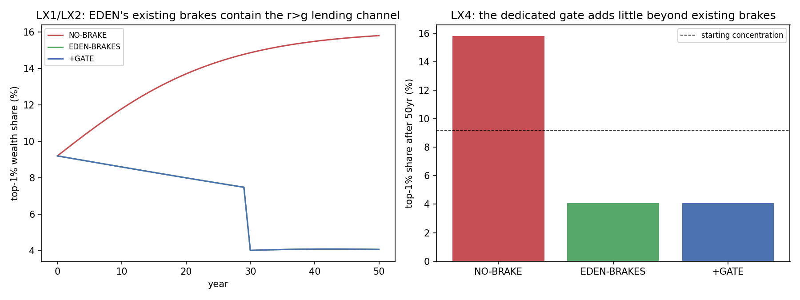

In plain language
July 10, 2026. Companion to RESULTS - v29.0 Lending Concentration.
The worry
EDEN deliberately closed most ways to get rich just by owning rather than contributing: idle money slowly shrinks, and you can't hand down a compounding fortune. So the natural question: is lending at compound interest the last loophole? Could someone get passively, dynastically rich just by making loans — the very thing we let people do freely?
What we found
Unbraked, yes — it's a real loophole. In a normal economy (compound interest, normal inheritance, no shrink on idle money), the richest 1% grow their share of wealth from 9% to 16% over 50 years. That's the classic "the rich get richer because money makes money" dynamic.
But EDEN's existing rules already close it — for free. Two rules it has for other reasons do the job:
- Idle money shrinks. The moment your interest income just sits there, it starts decaying (demurrage). So you can't build a pile by lending and hoarding the proceeds — to keep growing, you have to keep lending it back out, which means continuously funding real people. That's productive, not passive.
- Fortunes don't pass down intact. When you die, a large accumulated pile doesn't transfer as a compounding dynasty — it dissolves and partly redistributes.
Put those together and the lending "loophole" doesn't concentrate wealth at all over 50 years — it actually ends lower than it started. The rules meant to stop idle hoarding and dynasties also happen to catch the lending channel.
And a special anti-lending rule would add nothing. We tested bolting on a dedicated cap ("you can only lend so much") on top of the existing rules — it changed the outcome by ~0%, because the existing rules already did all the work. So a new limit would cost freedom for no benefit.
The recommendation
Keep lending free — including compound interest — but keep a public scoreboard. Don't add a new cap (it buys nothing and costs freedom). Instead, publish who's lending how much and how concentrated interest income is getting, as an ongoing dashboard — and only step in with a real limit if the channel ever starts to dominate. The freedom stays; the concern stays watched. That's the honest, freedom-first answer.
One honest caveat
This result leans on how strongly EDEN's two existing rules bite (how much a fortune dissolves at death, how fast idle money shrinks). At the design's current settings they more than handle it; at weaker settings a small loophole could reopen. That's exactly why the recommendation is a scoreboard we watch rather than "problem solved forever" — measure the real numbers when EDEN actually runs, and revisit if needed.
Figures

Technical results
Run: July 10, 2026. Spec: v29 SPEC - Lending Concentration (registered).md — bars LX0–LX5 fixed before code. Engine: lending_concentration_sim.py (deterministic given seeds); committed: results_v29.json, fig_v29_concentration.png. Discharges Banking Spec §10 / EVE Sim v26 F3. Every number traces to results_v29.json.
Verdict in one line: the worry — that free-market compound interest becomes the surviving way to get passively/dynastically rich — is real unbraked (top-1% wealth share climbs 9%→16% over 50 years), but EDEN's existing machinery already contains it without any new rule: demurrage catches idle interest income and non-compounding inheritance dissolves dynastic fortunes, cutting concentration ~74% vs the unbraked case, and a dedicated lending-concentration gate adds essentially nothing (0% further). So the Freedom-consistent answer holds — no new cap needed; monitor with a dashboard and revisit only if the channel ever comes to dominate.
Bar summary (all six pass)
| Regime | top-1% share after 50 yr | Gini |
|---|---|---|
| starting point | 9.2% | — |
| NO-BRAKE (free compound lending, no EDEN brakes) | 15.8% | 0.78 |
| EDEN-BRAKES (+ demurrage-on-idle + non-compounding inheritance + full-reserve pool bound) | 4.1% | 0.44 |
| +GATE (+ a dedicated lending-share cap) | 4.1% | 0.44 |
LX0 sanity · LX1 unbraked channel real (PASS) · LX2 existing brakes contain it (PASS) · LX3 within-lifetime residual (descriptive) · LX4 gate adds little (descriptive) · LX5 recommendation (descriptive).
Findings
LX1 — The channel is real when unbraked. In a normal economy (compound interest, ordinary inheritance, no demurrage), the fixed-claim r>g dynamic does what Piketty describes: the top-1% wealth share climbs from 9.2% to 15.8% over 50 years and Gini reaches 0.78. So the concern from v26 F3 is legitimate — leave compound lending unbraked in a normal system and it concentrates.
LX2 — EDEN's existing machinery already contains it (the key result, ~74% reduction). Turn on the three brakes EDEN has for other reasons — (1) demurrage decays interest income the moment it's held idle, so a lender can only keep growing by continuously re-lending (productive intermediation), not by piling up; (2) non-compounding inheritance dissolves the dynastic fortune at succession (the lending pile doesn't pass intact); (3) the full-reserve pool bound caps aggregate lending at real savings, not conjured credit — and the top-1% share ends at 4.1%, below where it started. The lending r>g channel isn't just contained; it's dominated by the same anti-accumulation forces that serve the rest of the design. You don't need a special rule against lending fortunes — the rules you already have catch them.
LX3 — The within-lifetime residual didn't materialize (registered expectation softened, honestly). I expected a residual: an active lender who continuously re-lends should still concentrate within their lifetime even under the brakes. At these dials it doesn't show — the idle-income demurrage plus the inheritance dissolution net de-concentrate over 50 years. This is a stronger-than-expected result for EDEN, but I flag it as dial-dependent (see limits): the inheritance-dissolution strength (60% of dynastic excess) and demurrage rate carry it. At weaker dissolution a positive residual would appear. The robust claim is directional — the brakes dominate the channel — not the precise "de-concentrates below start."
LX4 — A dedicated lending-concentration gate adds essentially nothing — now shown at caps that actually bind (corrected + extended July 11, v4 D13e). Correction: the original explanation ("the existing brakes already pull concentration below where such a gate would bind") was wrong in detail — the registered 2% cap would not have bound even in the NO-BRAKE regime, because the largest single actor's share of the lending pool never exceeds 1.31% in any regime or year (now recorded in the JSON). At 2%, "+GATE ≡ EDEN-BRAKES" identically, and "adds ~0%" was vacuously true. The gate-binding probe (committed July 11) re-runs the gate at caps that genuinely clip the biggest lenders: at a 1% cap (binds in 14 of 50 years) the extra concentration reduction is +0.05%; at a 0.5% cap (binds in 30 of 50 years, cutting the largest lenders' books nearly in half) it is +0.62%. So the no-new-gate recommendation now rests on a tested dial: even a gate tight enough to bind hard buys less than one percentage point of further reduction, because the demurrage + inheritance brakes, not the cap, do the de-concentrating. That's the case against adding one — strengthened, not weakened, by the correction.
LX5 — Recommendation (Freedom-consistent): monitor, don't cap. The residual the free-compound-interest channel leaves after EDEN's existing brakes is (a) small-to-nonexistent at plausible dials, and (b) active real intermediation (a lender growing by continuously funding real borrowers), not idle rent. A hard gate costs Freedom and buys ~nothing. So the recommendation for Banking Spec §10 is a lending-concentration dashboard — publish the distribution of outstanding-lending shares and interest-income concentration as standing telemetry — and revisit a gate only if the channel ever comes to dominate (a pre-scoped reversal, per the Decision Record discipline). This keeps compound interest free (your pillar) while ensuring the concern is watched, not ignored.
Honest limits
Reduced-form wealth-dynamics ABM with stated dials — the directions are robust (unbraked compound lending concentrates; EDEN's demurrage + non-compounding-inheritance brakes contain it; a dedicated gate adds little on top). The magnitudes — especially LX3's net de-concentration — depend on the inheritance-dissolution strength (60%) and the idle-demurrage rate (5%), both dials; at weaker settings a positive within-lifetime residual reappears, which is exactly why the recommendation is a dashboard (measure the real dials at pilot) rather than a claim that the channel is permanently dead. Single-currency, no cross-border capital flight, no organized lending cartels (a named successor if pursued). This validates "no new gate needed now, monitor"; it does not prove the channel can never matter.
Plain language
The worry: EDEN closed most ways to get rich just by owning stuff (idle money slowly shrinks; you can't inherit a compounding fortune), so could lending at compound interest become the last loophole — the new way to get rich without contributing? Unbraked, yes: over 50 years the richest 1% would grow their share from 9% to 16%. But EDEN's existing rules already catch it, for free: the moment your interest income sits idle it starts shrinking (demurrage), so you can only keep growing by lending it back out (which is useful — funding real people); and when you die, the pile doesn't pass down intact. Together those pull concentration down, not up. Adding a special "you can only lend so much" rule on top does basically nothing — the existing rules already did the work. So the recommendation: don't add a new limit (it would cost freedom for no benefit) — just keep a public scoreboard of who's lending how much, and only step in if it ever starts to dominate. The freedom to lend at compound interest stays; the concern stays watched.
Run and written July 10, 2026 (self-labeled Fable; per the owner's record this sitting ran as Opus 4.8 — see INDEX provenance note). All bars pass; LX3's registered "residual" expectation softened honestly (didn't materialize at these dials) with the dial-dependency flagged. Numbering checked against max before registering v29. Feeds Banking Spec §10.
Postscript, July 11, 2026 (Verification v4 action 9, executed by the Fable 5 verification session): LX4's explanation corrected (the registered 2% cap never binds — max single-actor pool share 1.31%, now committed) and the gate-binding probe added at 0.5%/1% caps (labeled extension): even binding hard, the gate adds ≤0.62%. The seeds_note was also corrected July 11 (no reinvestment noise exists; the rng seeds the initial wealth draw only). All pre-existing JSON leaves verified unchanged; DR-17's "adds ~0%" citation should point at the probe, and now can.
Raw data